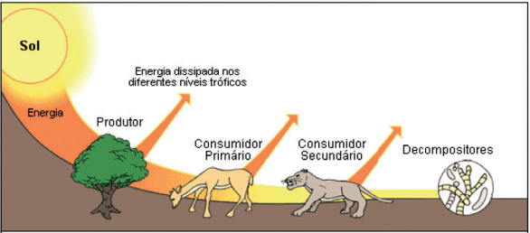

Fluxo de energia nos ecossistemas
Algas e plantas captam a energia luminosa proveniente do Sol e a transformam em energia química, que permanece armazenada nas moléculas orgânicas.
Os consumidores primários, ao comerem esses produtores, aproveitam a energia das moléculas orgânicas ingeridas, usando-a nos seus processos vitais.
Os consumidores secundários usam a energia das moléculas orgânicas ingeridas, que seguirá assim na cadeia alimentar.
A tranferência de energia é, portanto, unidirecional, ou seja, sempre tem início com a captação da energia luminosa pelos produtores e termina pela ação dos decompositores.

A quantidade de energia que um nível trófico recebe é sempre maior do que aquela que irá ser transferida para o nível seguinte. Isto é devido a dois fatores:
Produtividade Primária Bruta (PPB)
Corresponde ao total da energia luminosa absorvida pelos autótrofos e convertida em biomassa, em um determinado intervalo de tempo (corresponde ao total de biomassa produzida pela fotossíntese em um intervalo de tempo). A produtividade bruta é elevada em grandes formações vegetais (elevada taxa fotossintética).
Produtividade Primária Líquida (PPL)
Corresponde à parcela da energia armazenada disponível para o nível trófico seguinte. É importante enaltecer que parte da biomassa sintetizada pelos autótrofos é utilizada pelo próprio organismo para a sua sobrevivência (respiração celular = R). Nas grandes formações vegetais, a produtividade primária líquida é muito baixa, uma vez que a taxa respiratória é elevada.
A produtividade primária líquida pode ser calculada pela fórmula:
PPL = PPB - R
Produtividade Secundária
A quantidade de matéria orgânica absorvida por um herbívoro durante certo intervalo de tempo corresponde à produtividade secundária bruta (PSB). Usando o mesmo raciocínio anterior, a quantidade de energia acumulada nos herbívoros, disponível para o nível trófico seguinte (já descontando o que animal gastou para suas atividades) constitui a produtividade secundária líquida. Observe que o fator tempo é considerado. Dessa forma, o tempo necessário para se obter 500Kg de carne (a partir de um bezerro) é maior que o tempo necessário para obter 500Kg de carne de frango, utilizando-se a mesma quantidade de milho. Diz-se, assim, que a produtividade secundária líquida do frango é maior que a do bezerro.
Magnificação Trófica
Quando substância pouco solúvel em água, mas solúveis em gordura, como o DDT (diclorodifeniltricloroetano) é ingerida por um ser vivo, como ela não é eliminadae fica acumulda a medida que se avança na cadeia alimentar sua quantidade vai aumentando, pois um animal se alimenta do outro sem que nenhum deles consiga eliminar o produto.